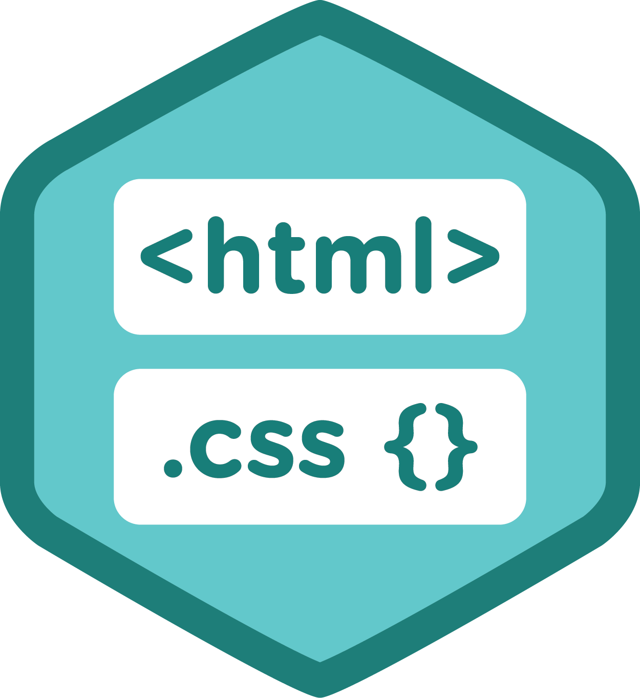
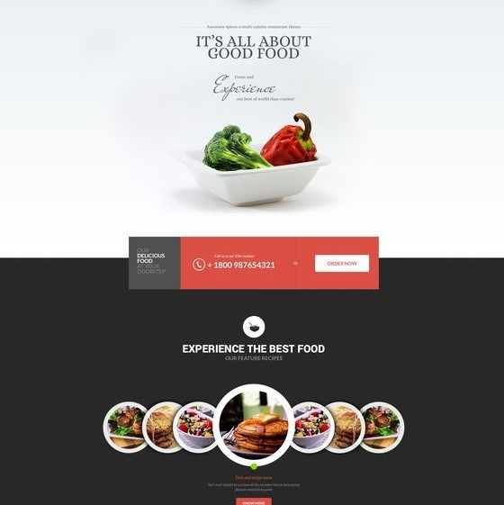
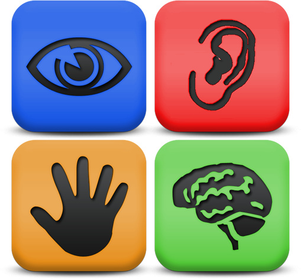

About my Webpage
Every webpage has a designing process, it starts with an idea that keeps evolving until it gets to its final state. That final state is obviously the one presented to the
world, but in here I'm going to talk about some features of the current one.
-
Technical aspects

The most important part of a webpage, is that it works in as many devices as possible keeping the aesthetics and original functionality. So even though I don't have a mobile
version of my web page, it is designed taking into account that users that access it don't have the same monitor size, therefore everything but the font size adjusts to the
size of the window used to view it.
I achieved this by making my page simply, using just the right amount of html tags and CSS classes and ids. Heres a lists with some of the most important tags, classes and ids I used:
HTML Tags
- a: Used it for the hyperlinking to other pages inside and outside this site.
- div: Used it to divide sections of the page
- h1: Used it for the main title of each page, and the h3 and h5 tags for the first and second level subtitles
- img: Used it to add some visual aesthetics besides the colors
- link: This helped me to add the CSS styling sheets, my own and the ones I use for the fonts
- table: The table is tha main structure of the navigation bar
CSS Classes
-
horizontalBar: This is my only class and it's purpose is to give the style to the menu bar, I used it both for the div surrounding the table and for the table containing
the text of the menu bar.
CSS Ids
- content: This id is used to give the style to the div that contains the content of each page
- mainList: This id lets me eliminate the padding for the upper level list in each page. This is because to divide each section of the content I find it easy to use an
unordered list than divs
-
Aesthetics

I wanted a simple design before anything else I decided how where things going to see, without worrying about colors, font size or any other aesthetichs aspect. Once I
decided that I wanted a menu bar on top, and a column of content as in some blogs and webpages as Tumblr, I made my home page.
At first I focused on the positioning of things and after I got that I asked help to my friend to decide on the colors, font size and other feautures.
Colors
I based my colors on the colors of thee image of this section. The background color is a really dark grey, #282828; the navigation bar is of a pinky orange tone, #D94F42;
almost white for the content background, #FDFDFD; and finally, a grey color for the hover effect in the navigation bar, #514C50.
Font
I used a free source font for my site that I found in the googleapis web page, the name of the font is 'Open Sans Condensed', but I also included a second one, Montserrat,
from googleapis, in case the browser has trouble displaying the first one. Lastly I selected sans-serif if the above don't work.
-
Accessibility

For my webpage accessability I made sure of some important aspects considering the major categories of disability types:
Visual
For the blind people I made sure that every image has an alternative text to be displayed or read by monitor reading softwares. For the people that are not blind but have
difficulties reading small letters I made sure that the font size was of a good size and the font family wasn't hard to read, also I made sure that the colors wouldn't be
an issue in my page by asking a friend of mine, who is color blind, what he thought about them.
Hearing
For people with this disability my site won't be a problem since it doesn't have any music, sound effects or any other feature that requires hearing.
Motor
I took into account people with motor disabilities by making the whole space of the navigation bar hyperlinked, so they can navigate by clicking any part of the cell
and not only the words, which may be harder to click. Also, my site can be navigate without the need of a mouse, only using the keyboard.
Cognitive
I tried to make my page to the point as possible by not using that much text, except for this page, and adding an image for each section to make it easier for people
with cognitive problems to enjoy an remember the important aspects of my site.